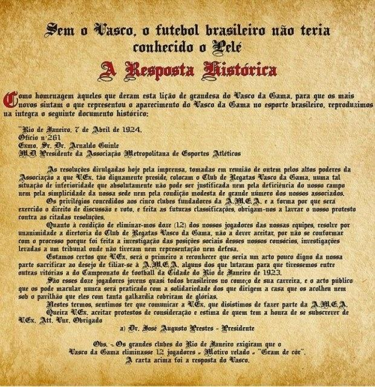
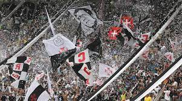

HISTÓRIA DO GIGANTE DA COLINA

O Vasco da Gama foi fundado em 21 de agosto de 1898, no Rio de Janeiro, por um grupo de remadores, principalmente portugueses. A famosa "Carta Resposta" foi escrita em 1923 por José Augusto Prestes, então presidente do clube, em resposta a uma carta de um torcedor preconceituoso que questionava a presença de negros na equipe. A resposta foi um marco na luta contra o racismo, afirmando que o Vasco "não admitia distinção de raças". A postura antirracista do Vasco foi reforçada com a entrada do lendário jogador negro, Leônidas da Silva, em 1934, que fez história no clube.
.jpeg)
O Vasco conquistou seu primeiro título carioca em 1923, marcando o início de uma era de sucesso no futebol. O clube se destacou internacionalmente ao vencer a Copa Rio Internacional em 1953, considerada uma das precursoras da atual Copa Libertadores. O Vasco é conhecido por sua rivalidade com o Flamengo, protagonizando o "Clássico dos Milhões", um dos maiores clássicos do futebol brasileiro. O Vasco venceu quatro Campeonatos Brasileiros da Série A (1974, 1989, 1997 e 2000) e uma Copa do Brasil (2011).

Além do futebol, o Vasco tem uma rica tradição em outras modalidades esportivas, como remo, basquete e atletismo. O time de basquete do Vasco, conhecido como "Expresso da Vitória", dominou a cena nacional e internacional nas décadas de 1940 e 1950. O clube também tem uma vibrante torcida e samba-enredo em sua homenagem, presente nos desfiles das escolas de samba do Rio de Janeiro.
A luta contra o racismo sempre foi um pilar fundamental na história do Vasco, refletindo-se em suas políticas de inclusão e em sua base de fãs diversificada. O clube abriga projetos sociais e esportivos que promovem a igualdade e o desenvolvimento de jovens talentos, independentemente de sua origem étnica. Ídolos negros, como Romário, Edmundo, Juninho Pernambucano e outros, desempenharam papéis significativos no sucesso do clube e inspiraram gerações de torcedores. A história do Vasco é marcada não apenas por suas conquistas esportivas, mas também por seu compromisso com a justiça social e a igualdade racial. O clube continua sendo um símbolo de resistência e inclusão no esporte brasileiro.
.jpeg)
São Januário é o estádio emblemático do Vasco da Gama, e sua construção é uma parte importante da história do clube: O estádio São Januário foi inaugurado em 1927 e é um dos estádios mais antigos do Brasil. O nome do estádio é uma homenagem a São Januário, santo padroeiro dos navegantes, e faz referência à localização próxima ao Canal de São Januário. A construção de São Januário foi financiada principalmente por torcedores do clube, e o estádio foi inaugurado como um dos mais modernos do Brasil na época. Além de ser o local onde o Vasco realiza seus jogos em casa, o estádio também é um símbolo da história do clube e abriga o Museu do Vasco, que preserva a rica história e conquistas da equipe. Edmundo, Roberto Dinamite e São Januário são partes essenciais da história do Vasco da Gama, contribuindo para o sucesso e a identidade do clube ao longo dos anos.
◤✠HINO DO VASCO DA GAMA◢